FFT registration finds a shift with one correlation. Today the question is how do we match two shapes when the rotation is unknown too? First answer: walk around the outline and treat it as a periodic signal.
An outline as a complex signal z_n = x_n + i\,y_n; its Fourier descriptorsc_k (the shape-features slide, now in depth).
What moving, scaling, turning, a new starting point and a mirror image do to the c_k.
Each pair c_{\pm k} is an ellipse: epicycles draw the outline.
Matching two outlines with unknown rotation and starting point: one FFT gives every start at once.
Elliptic Fourier descriptors, and the pitfalls.
Recall: e^{i\alpha} = \cos\alpha + i\sin\alpha; multiplying a point z by e^{i\alpha}turns it by \alpha about 0 (clockwise on screen, where y points down), multiplying by s > 0scales it.
Slides titled The math give the formulas and proofs; the ideas are complete without them.
Keep only |k| \le K and transform back: a smooth version of the outline. Small K: the overall shape; large K: detail and pixel noise.
c_{\pm1} alone: the best-fitting ellipse (next slides).
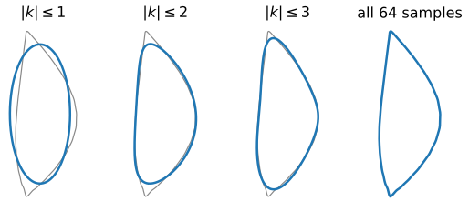
Today’s additions: what each change does to the c_k, matching two outlines, and getting the samples right.
Sampling the outline
The boundary walk of the region-properties unit gives the boundary pixels, one step at a time: straight steps of 1 pixel and diagonal steps of \sqrt2.
Taking every j-th boundary pixel walks faster along diagonals: the speed changes with the direction of the edge. That uneven speed is in every c_k, and it is different for a turned copy.
Instead: resample to equal arc length. Measure the length L of the polygon through the pixel centres and put N points every L/N along it (linear interpolation between corners).
N a power of two, for the FFT. N = 64 or 128 is plenty for a nucleus.
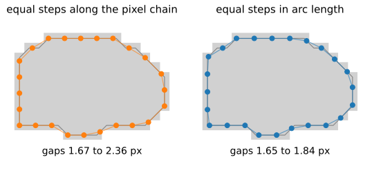
Each harmonic is an ellipse
One term c_k e^{2\pi i k t} is a point going round a circle of radius |c_k|, k times per walk (k < 0: the other way).
Two terms c_k and c_{-k} together: an ellipse, traced |k| times. Semi-axes |c_k| + |c_{-k}| and \big||c_k| - |c_{-k}|\big|.
c_{\pm1}: the ellipse that fits the outline best (least squares, with the same starting point and speed).
Epicycles: chain the circles, arm after arm; the tip of the last arm draws the outline. Each added pair of circles adds one more ellipse of detail.
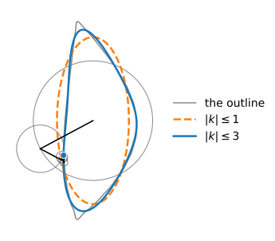
Try it: descriptors and epicycles
What a change does to the coefficients (1)
The DFT is linear, so three rules come for free:
Move the outline by t: only c_0 changes (by t). Scale by s: every c_k is multiplied by s.
Turn by \alpha: every c_k is multiplied by e^{i\alpha}: every arrow c_k turns by the same angle. The same trick as the complex moments and the Zernike moments (moments day).
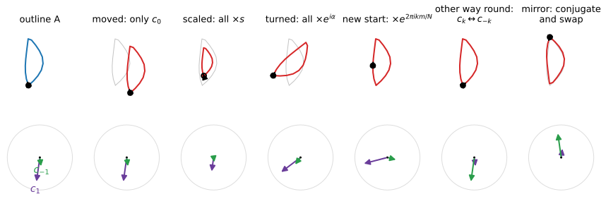
The last three columns: next slide.
What a change does to the coefficients (2)
Start m points later (z'_n = z_{n+m}): c_k is multiplied by e^{2\pi i k m/N}. A phase ramp: c_1 turns one way, c_{-1} the other, c_2 twice as far: different for every k. This is the shift theorem of the Fourier unit.
Walk the other way round (z'_n = z_{-n}): c_k and c_{-k} swap places. A boundary walk always goes one way (clockwise here), so this only matters for outlines from elsewhere.
Mirror image (y \to -y, the conjugate \overline{z}): conjugate and swap, c'_k = \overline{c_{-k}}. Walked clockwise again, a mirror image has c'_k = \overline{c_k}.
So: a rotation turns all c_k by the same angle, a new start turns c_k by an angle proportional to k. Plotting the phase of c_k(B) relative to c_k(A) against k tells them apart: a flat line or a ramp.
The math: the five rules
c_k = \frac1N\sum_{n=0}^{N-1} z_n\, e^{-2\pi i k n/N}, \qquad z_n = \sum_k c_k\, e^{2\pi i k n/N}.
Linearity: z'_n = s e^{i\alpha} z_n + t gives c'_k = s e^{i\alpha} c_k + t\,\delta_{k0}, since \frac1N\sum_n e^{-2\pi i k n/N} = \delta_{k0}.
New start: c'_k = \frac1N\sum_n z_{n+m} e^{-2\pi i k n/N} = \frac1N\sum_j z_j e^{-2\pi i k (j - m)/N} = e^{2\pi i k m/N} c_k (substitute j = n + m, the sum runs over a whole period).
Other direction: c'_k = \frac1N\sum_n z_{-n} e^{-2\pi i k n/N} = \frac1N\sum_j z_j e^{2\pi i k j/N} = c_{-k}.
Mirror: c'_k = \frac1N\sum_n \overline{z_n}\, e^{-2\pi i k n/N} = \overline{\tfrac1N\textstyle\sum_n z_n e^{2\pi i k n/N}} = \overline{c_{-k}}; with the direction reversed as well, \overline{c_k}.
Continuous start: a start shifted by a fraction \tau of the length multiplies c_k by e^{2\pi i k \tau} (the series z(t) = \sum_k c_k e^{2\pi i k t} at t + \tau).
By hand: rotation or new start?
z = (2, i, -2, -i): an ellipse sampled at the ends of its axes.
c_1 = \tfrac14(2 + 1 + 2 + 1) = \tfrac32
c_{-1} = \tfrac14(2 - 1 + 2 - 1) = \tfrac12, the others 0. Semi-axes 2 and 1.
Turn by 90° (times i): c_1 \to \tfrac32 i, c_{-1} \to \tfrac12 i.
Start one point later: c_1 \to \tfrac32 i too, but c_{-1} \to -\tfrac12 i.
c_1 alone cannot tell the two apart; c_{-1} (or c_2, …) can.
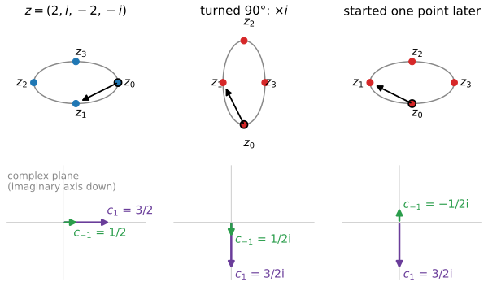
Try it: rotation vs new starting point
Sampling decides what you see
A square sampled at its four corners, z = (1, i, -1, -i):
c_1 = 1, every other c_k = 0: exactly the coefficients of a circle. Four samples cannot tell a square from a circle (or from any curve through these points).
Eight samples (corners and midpoints): c_1 = 0.854 and c_{-3} = 0.146 appear: the square needs k = 1, -3, 5, -7, \dots (4-fold symmetry).
Rule of thumb: the samples must be much closer than the smallest detail you want in the c_k; the DFT only knows the samples.
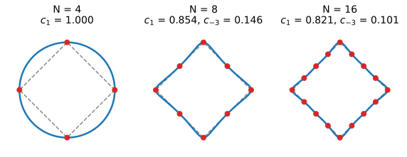
Magnitudes: invariant, and what they lose
Divide by |c_1| and take sizes: |c_k| / |c_1| does not change with position, scale, rotation or starting point. A handy signature for a quick comparison.
It loses the relative phases, and the phases carry the arrangement of the parts. Two different shapes can have exactly the same |c_k| for every k: here c_3 = +0.12 against -0.12 (demo: magnitude distance 0.000, the full match leaves a misfit of 23 %).
A mirror image (walked clockwise again) has c_k \to \overline{c_k}: the same sizes. Magnitudes cannot tell b from d.
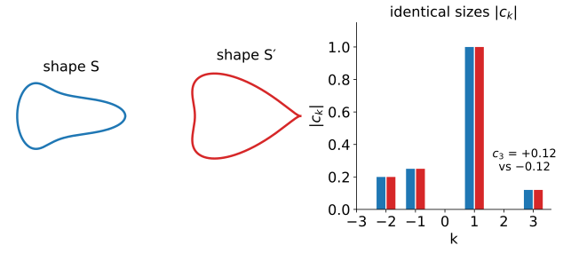
The math: invariants
From the rules (c'_k = s e^{i\alpha} e^{2\pi i k m/N} c_k for k \ne 0):
|c'_k| / |c'_1| = |c_k| / |c_1|: invariant to translation, scale, rotation and start.
c'_k\,c'_{-k} = s^2 e^{2i\alpha}\, c_k c_{-k}: the start cancels (e^{2\pi i k m/N} e^{-2\pi i k m/N} = 1), the rotation does not. So \frac{c_k\,c_{-k}}{c_1\,c_{-1}} is invariant to translation, scale, rotation and start, and keeps a relative phase between c_k and c_{-k}. Products whose rotations and ramps cancel are the Fourier-descriptor version of the moment invariants (invariants unit).
Relating different|k|: a product \prod_j c_{k_j}\prod_l \overline{c_{k'_l}} survives rotation and start when it has as many plain as conjugated factors and \sum k_j = \sum k'_l, e.g. c_3\,c_{-1}\,\overline{c_1}^{\,2}/|c_1|^4: +0.03 for S, -0.03 for S′.
No invariant is needed for matching: estimate the rotation, scale and start instead (next slides). That keeps every phase.
Matching with unknown rotation and start
Compare outline B with every rotation, scale and starting point of outline A.
For one fixed start m, the best rotation and scale are one complex number\lambda = s e^{i\alpha}: a least-squares fit, like a line fit.
The fit quality for all starts at once: slide A’s samples along B’s, a circular correlation of the two complex outlines, computed with one FFT (cross-correlation with the FFT).
The peak says where A must start; the phase of the peak value says the angle, its size the scale.
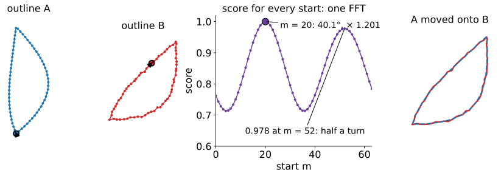
Matching as pseudocode
cA = DFT(A) / N, cB = DFT(B) / N # both outlines: N samples, arc length
for every k ≠ 0:
P(k) = conj(cA(k)) · cB(k) # k = 0 (the position) does not count
q = DFT(P) # q(m) for every start m, one FFT
m* = the m with the largest |q(m)|
λ = q(m*) / Σ_k |cA(k)|² # scale |λ|, angle arg λ
score = |q(m*)| / sqrt(Σ|cA(k)|² · Σ|cB(k)|²) # 1: a perfect fit
mirror allowed: repeat with conj(cA(k)), keep the better
The score is a normalised correlation: 1 when B is exactly a turned, scaled, moved and re-started copy of A.
\sqrt{1 - \text{score}^2} is the misfit: the rms distance left after the best fit, as a fraction of the size of B.
The math: complex Procrustes over cyclic shifts
Fit B by A started m later, turned, scaled and moved: minimise over \lambda \in \mathbb C (and m) E(\lambda, m) = \sum_{k \ne 0}\big|c'_k - \lambda\, e^{2\pi i k m/N} c_k\big|^2 \qquad (c = c^A,\ c' = c^B;\ k = 0 \text{ is fitted by the translation}). For fixed m this is linear least squares in one complex unknown: \lambda^* = \frac{\sum_k \overline{c_k}\, e^{-2\pi i k m/N}\, c'_k}{\sum_k |c_k|^2} = \frac{q(m)}{\sum_k |c_k|^2}, \qquad q(m) = \sum_{k\ne0} \overline{c_k}\,c'_k\, e^{-2\pi i k m/N},E(\lambda^*, m) = \sum_k |c'_k|^2 - \frac{|q(m)|^2}{\sum_k |c_k|^2}. So the best start maximises |q(m)|, and q for all m is one DFT of \overline{c_k}\,c'_k: the correlation theorem again. By Parseval, q(m) = \frac1N\sum_n \overline{(z^A_{n+m} - c_0)}\,(z^B_n - c'_0): the circular cross-correlation of the two centred outlines. Normalised, \rho(m) = |q(m)|/\sqrt{\sum|c_k|^2\sum|c'_k|^2} and E/\sum|c'_k|^2 = 1 - \rho^2. Mirror images: repeat with the conjugated, reversed outline (c_k \to \overline{c_k}).
Try it: matching outlines
Mirror images
A rotation can never produce a mirror image: the best fit of A itself to a mirrored hand leaves a misfit of 32 % (demo).
Allowed mirror: also match the mirror image of A (conjugate the c_k); keep the better and report which it was. In the demo: score 1.000, angle 25.0°, start 7.
Whether a mirror image counts as “the same shape” is a decision about the biology, not the math: a left and a right hand, a cell and its mirror image in a flipped slide.
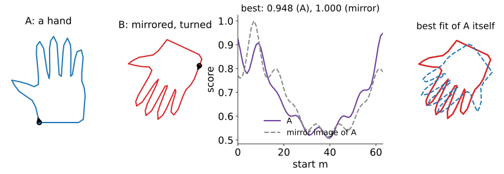
Relatives: radius, Procrustes, ICP
Radius r(\theta) around the centre (DP in polar coordinates, later): one number per angle, simpler, but only for star-shaped objects. A ray from the centre of a hand crosses the outline several times; z(t) works for any closed outline.
Procrustes (shape models, later): the same complex least-squares fit, but with known landmarks. Here the correspondence is unknown up to a cyclic shift, and the FFT tries every shift.
ICP (aligning point sets): no order along an outline at all, but it needs a starting guess; descriptor matching searches every start and every angle at once.
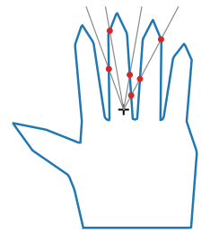
Elliptic Fourier descriptors
The standard in morphometrics (leaves, shells, teeth, nuclei and cell outlines; Kuhl & Giardina, 1982): x(t) and y(t) as two real Fourier series,
Four real numbers per harmonic n, the same information as the complex pair c_{\pm n}. Same information, different bookkeeping.
Normalised by the first ellipse: start at the end of its major axis, turn the major axis to x, divide by its length. Then a_1 = 1, b_1 = c_1 = 0, d_1 = minor/major axis (0.709 for this nucleus), and the rest are comparable between outlines. The end of the axis is ambiguous by 180°.
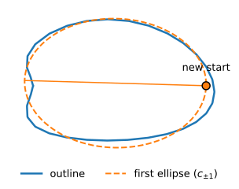
Pitfalls
One closed outline per object. Holes give a second outline; touching objects give one outline around both: separate them first (watershed).
High k is pixel noise. The staircase of the pixel boundary adds a floor of small |c_k| that a smooth outline does not have; compare with |k| \le K only, or smooth first. Uneven sampling (equal steps along the pixel chain) raises it further.
Spiky or very concave shapes need many coefficients; a few c_k describe a blob well and a neuron badly.
The descriptors of a segmentation inherit its errors: a nucleus cut in half by a bad threshold is a different shape.
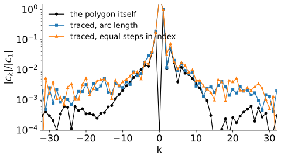
Demo, nucleus at 14 px turned by 30°: equal steps along the chain give 32.5° and a misfit of 7.3 %; arc length 28.5° and 4.7 %.
Summary
An outline is a periodic complex signalz_n = x_n + i\,y_n; its DFT gives the Fourier descriptorsc_k. Resample to equal arc length first.
Move: c_0. Scale: all \times s. Turn: all \times e^{i\alpha}. New start: \times e^{2\pi i k m/N}, a ramp. Other direction: c_k \leftrightarrow c_{-k}. Mirror: conjugate (and swap).
Each pair c_{\pm k} is an ellipse; epicycles draw the outline; c_{\pm1} is the best ellipse.
|c_k|/|c_1|: a quick invariant signature, blind to mirror images and to rearranged phases.
Matching: the score for every starting point is one FFT of \overline{c^A_k}\,c^B_k; the peak gives the start, its phase the angle, its size the scale. Allow the mirror if it should count.
Next: the same trick on a whole image, where a rotation becomes a shift in polar coordinates (Fourier–Mellin).